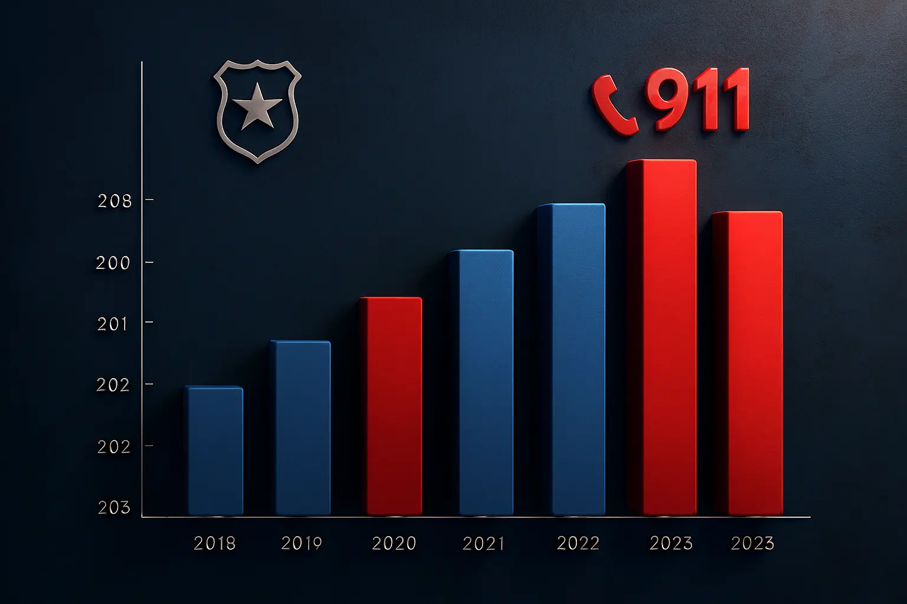

Key Statistics
- Average response time: 3 minutes
- Calls handled per day: 12,000+
- Coverage: Nationwide
- Operator availability: 24/7
- Dispatch accuracy rate: 98%

User Guides: Responsible Use of 911
The 911 Emergency Call Center is a vital resource for saving lives and protecting communities. To ensure its effectiveness, users must follow these guidelines:
- Call only for real emergencies: Use 911 for crimes in progress, medical emergencies, fires, accidents, or life-threatening situations.
- Provide accurate information: Stay calm and clearly state your location, the nature of the emergency, and any relevant details.
- Do not hang up: Remain on the line until the operator tells you it's okay to disconnect.
- Do not prank call: False or non-serious calls waste resources and delay help for real emergencies.
- Teach children: Educate young family members on when and how to use 911 responsibly.
- Use alternative numbers for non-emergencies: Contact local police stations or health services for routine matters.